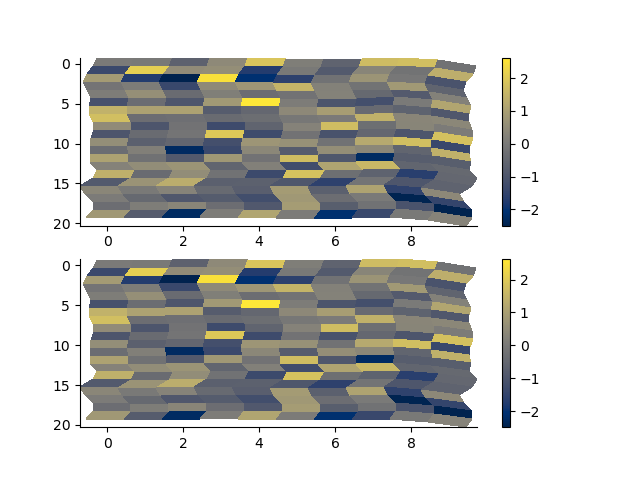
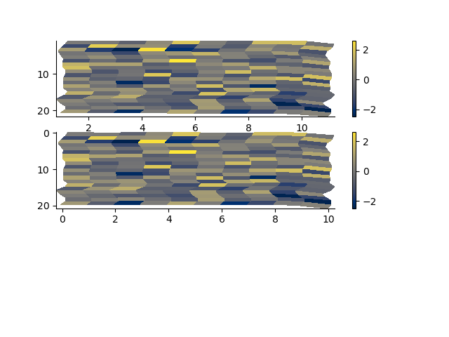
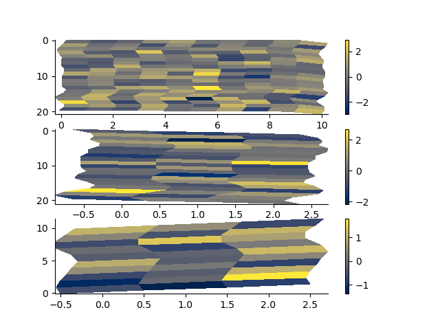

Note
Go to the end to download the full example code.
2D Rectilinear Mesh
This 2D rectilinear mesh defines a grid with straight cell boundaries.
It can be instantiated in two ways.
The first is by providing the cell centres or cell edges in two dimensions.
The second embeds the 2D mesh in 3D by providing the cell centres or edges in three dimensions. The first two dimensions specify the mesh coordinates in the horiztontal cartesian plane while the third discretizes in depth. This allows us to characterize a mesh whose horizontal coordinates do not follow a line that is parallel to either the “x” or “y” axis.
import h5py
from geobipy import StatArray
from geobipy import RectilinearMesh1D, RectilinearMesh2D, RectilinearMesh3D
import matplotlib.pyplot as plt
import numpy as np
Specify some cell centres in x and y
x = StatArray(np.arange(10.0), 'Easting', 'm')
y = StatArray(np.arange(20.0), 'Depth', 'm')
rm = RectilinearMesh2D(x_centres=x, y_centres=y)
We can plot the grid lines of the mesh.
p=0;
plt.figure(p)
_ = rm.plot_grid(flipY=True, linewidth=0.5)
# Intersecting multisegment lines with a mesh
arr = np.zeros(rm.shape)
i = rm.line_indices([0.0, 3.0, 6.0, 9], [2.0, 6.0, 0.0, 10])
arr[i[:, 0], i[:, 1]] = 1
p += 1; plt.figure(p)
rm.pcolor(values = arr)

(<Axes: xlabel='Easting (m)', ylabel='Depth (m)'>, <matplotlib.collections.QuadMesh object at 0x180d19bb0>, <matplotlib.colorbar.Colorbar object at 0x1824970b0>)
We can pcolor the mesh by providing cell values.
xx, yy = np.meshgrid(rm.y.centres, rm.x.centres)
arr = StatArray(np.sin(np.sqrt(xx ** 2.0 + yy ** 2.0)), "Values")
rm2, values2 = rm.resample(0.5, 0.5, arr, method='linear')
p += 1; plt.figure(p)
_ = rm.pcolor(arr, grid=True, flipY=True, linewidth=0.5)
Mask the x axis cells by a distance
rm_masked, x_indices, z_indices, arr2 = rm.mask_cells(x_distance=0.4, values=arr)
p += 1; plt.figure(p)
_ = rm_masked.pcolor(StatArray(arr2), grid=True, flipY=True)
Mask the z axis cells by a distance
rm_masked, x_indices, z_indices, arr2 = rm.mask_cells(y_distance=0.2, values=arr)
p += 1; plt.figure(p)
_ = rm_masked.pcolor(StatArray(arr2), grid=True, flipY=True)

Mask axes by a distance
rm_masked, x_indices, z_indices, arr2 = rm.mask_cells(x_distance=0.4, y_distance=0.2, values=arr)
p += 1; plt.figure(p)
_ = rm_masked.pcolor(StatArray(arr2), grid=True, flipY=True)
x = StatArray(np.arange(10.0), 'Easting', 'm')
y = StatArray(np.cumsum(np.arange(15.0)), 'Depth', 'm')
rm = RectilinearMesh2D(x_centres=x, y_centres=y)
We can perform some interval statistics on the cell values of the mesh Generate some values
a = np.repeat(np.arange(1.0, np.float64(rm.x.nCells+1))[:, np.newaxis], rm.y.nCells, 1)
Compute the mean over an interval for the mesh.
rm.intervalStatistic(a, intervals=[6.8, 12.4], axis=0, statistic='mean')
(array([[9., 9., 9., ..., 9., 9., 9.]]), [6.8, 12.4])
Compute the mean over multiple intervals for the mesh.
rm.intervalStatistic(a, intervals=[6.8, 12.4, 20.0, 40.0], axis=0, statistic='mean')
(array([[ 9., 9., 9., ..., 9., 9., 9.],
[nan, nan, nan, ..., nan, nan, nan],
[nan, nan, nan, ..., nan, nan, nan]]), [6.8, 12.4, 20.0, 40.0])
We can specify either axis
rm.intervalStatistic(a, intervals=[2.8, 4.2], axis=1, statistic='mean')
(array([[ 1.],
[ 2.],
[ 3.],
...,
[ 8.],
[ 9.],
[10.]]), [2.8, 4.2])
rm.intervalStatistic(a, intervals=[2.8, 4.2, 5.1, 8.4], axis=1, statistic='mean')
(array([[ 1., nan, 1.],
[ 2., nan, 2.],
[ 3., nan, 3.],
...,
[ 8., nan, 8.],
[ 9., nan, 9.],
[10., nan, 10.]]), [2.8, 4.2, 5.1, 8.4])
Slice the 2D mesh to retrieve either a 2D mesh or 1D mesh
rm2 = rm[:5, :5]
rm3 = rm[:5, 5]
rm4 = rm[5, :5]
p += 1; plt.figure(p)
plt.subplot(131)
rm2.plot_grid()
plt.subplot(132)
rm3.plot_grid()
plt.subplot(133)
rm4.plot_grid(transpose=True)
Resample a grid
values = StatArray(np.random.randn(*rm.shape))
rm2, values2 = rm.resample(0.5, 0.5, values)
p += 1; plt.figure(p)
plt.subplot(121)
rm.pcolor(values)
plt.subplot(122)
rm2.pcolor(values2)
(<Axes: >, <matplotlib.collections.QuadMesh object at 0x17faebb00>, <matplotlib.colorbar.Colorbar object at 0x17f487b60>)
Axes in log space
x = StatArray(np.logspace(-1, 4, 10), 'x')
y = StatArray(np.logspace(0, 3, 10), 'y')
rm = RectilinearMesh2D(x_edges=x, x_log=10, y_edges=y, y_log=10)
# We can plot the grid lines of the mesh.
p += 1; plt.figure(p)
_ = rm.plot_grid(linewidth=0.5)
with h5py.File('rm2d.h5', 'w') as f:
rm.toHdf(f, 'test')
with h5py.File('rm2d.h5', 'r') as f:
rm2 = RectilinearMesh2D.fromHdf(f['test'])
arr = np.random.randn(*rm.shape)
p += 1; plt.figure(p)
plt.subplot(211)
rm.pcolor(arr)
plt.subplot(212)
rm2.pcolor(arr)
(<Axes: xlabel='x', ylabel='y'>, <matplotlib.collections.QuadMesh object at 0x182aca390>, <matplotlib.colorbar.Colorbar object at 0x17f6df0b0>)
relative_to
x = StatArray(np.arange(10.0), 'Northing', 'm')
y = StatArray(np.arange(20.0), 'Depth', 'm')
rm = RectilinearMesh2D(x_centres=x, y_centres=y)
p += 1; plt.figure(p)
plt.subplot(121)
_ = rm.plot_grid(linewidth=0.5, flipY=True)
rm = RectilinearMesh2D(x_centres=x, x_relative_to=0.2*np.random.randn(y.size), y_centres=y, y_relative_to=0.2*np.random.randn(x.size))
plt.subplot(122)
_ = rm.plot_grid(linewidth=0.5, flipY=True)
# relative_to single
with h5py.File('rm2d.h5', 'w') as f:
rm.toHdf(f, 'test')
with h5py.File('rm2d.h5', 'r') as f:
rm2 = RectilinearMesh2D.fromHdf(f['test'])
arr = np.random.randn(*rm.shape)
p += 1; plt.figure(p)
plt.subplot(211)
rm.pcolor(arr, flipY=True)
plt.subplot(212)
rm2.pcolor(arr, flipY=True)
# relative_to expanded
with h5py.File('rm2d.h5', 'w') as f:
rm.createHdf(f, 'test', add_axis=RectilinearMesh1D(centres=StatArray(np.arange(3.0), name='Easting', units="m"), relative_to = 0.2*np.random.randn(x.size, y.size)))
for i in range(3):
rm.x.relative_to += 0.5
rm.y.relative_to += 0.5
rm.writeHdf(f, 'test', index=i)
with h5py.File('rm2d.h5', 'r') as f:
rm2 = RectilinearMesh2D.fromHdf(f['test'], index=0)
with h5py.File('rm2d.h5', 'r') as f:
rm3 = RectilinearMesh3D.fromHdf(f['test'])
p += 1; plt.figure(p)
plt.subplot(311)
rm.pcolor(arr, flipY=True)
plt.subplot(312)
rm2.pcolor(arr, flipY=True)
p += 1; plt.figure(p)
arr = np.random.randn(*rm3.shape)
plt.subplot(311)
mesh = rm3[0, :, :]
mesh.pcolor(arr[0, :, :], flipY=True)
plt.subplot(312)
mesh = rm3[:, 0, :]
mesh.pcolor(arr[:, 0, :], flipY=True)
plt.subplot(313)
rm3[:, :, 0].pcolor(arr[:, :, 0])
plt.show()
- 
- 
- 
Total running time of the script: (0 minutes 1.747 seconds)